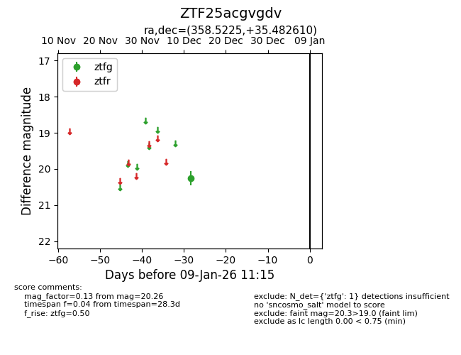
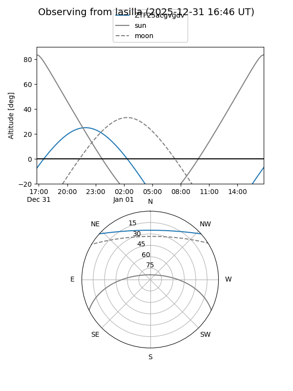
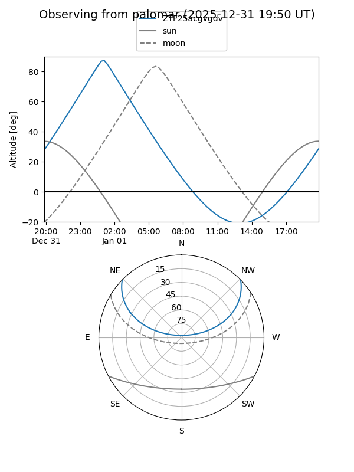

ZTF25acgvgdv
Target ZTF25acgvgdv at 2025-12-18 11:18
Aliases and brokers:
FINK: fink-portal.org/ZTF25acgvgdv
Lasair: lasair-ztf.lsst.ac.uk/objects/ZTF25acgvgdv
ALeRCE: alerce.online/object/ZTF25acgvgdv
alt names
ZTF25acgvgdv (ztf,fink_ztf)
Coordinates:
equatorial (ra, dec) = 358.5225,+35.48261
equatorial (HMS+DMS) = 23:54:05.41,+35:28:57.40
galactic (l, b) = (109.9742,-25.94201)
Photometry
last ztfg=20.26
1 ztfg detections
Lightcurve

Visibility


Additional plots